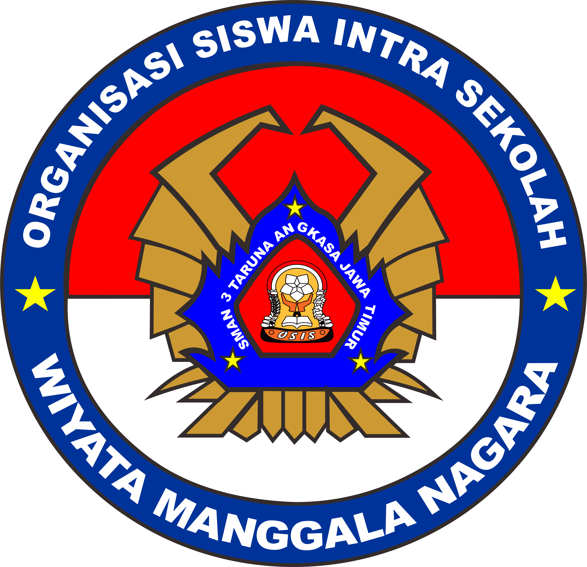
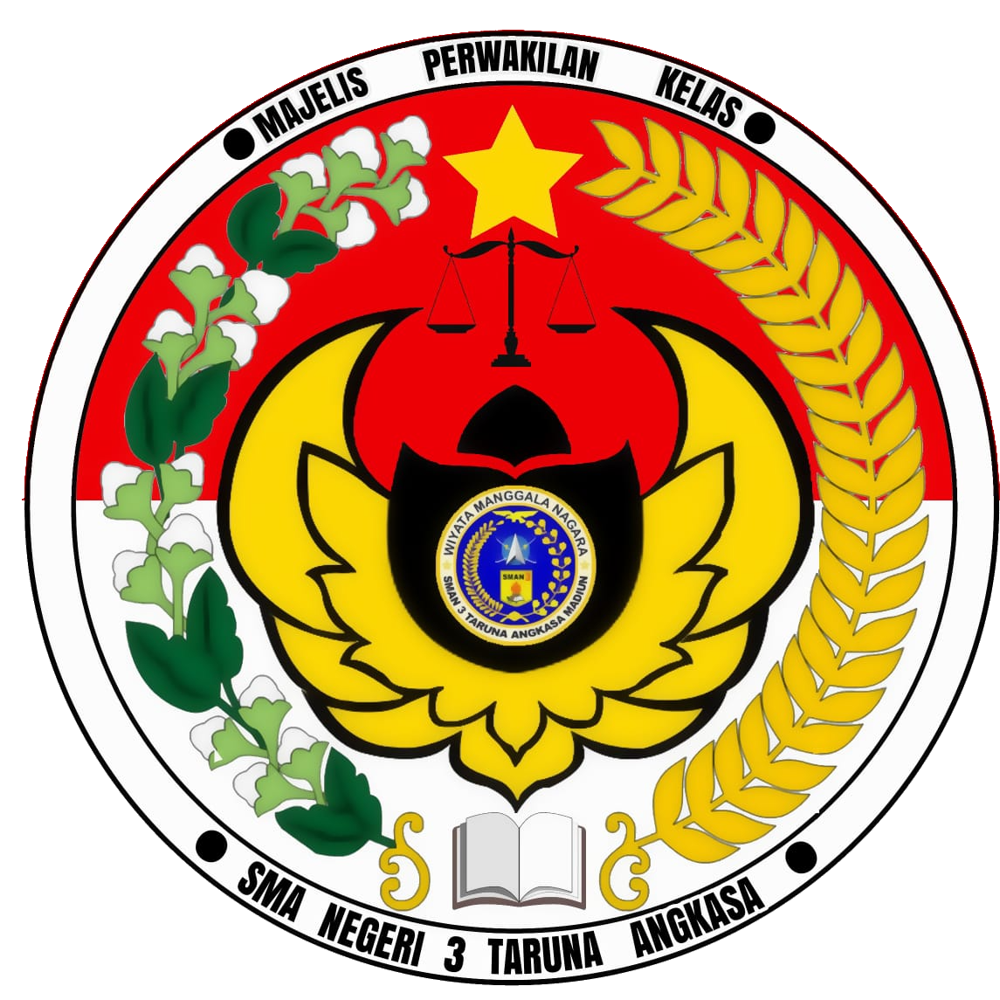
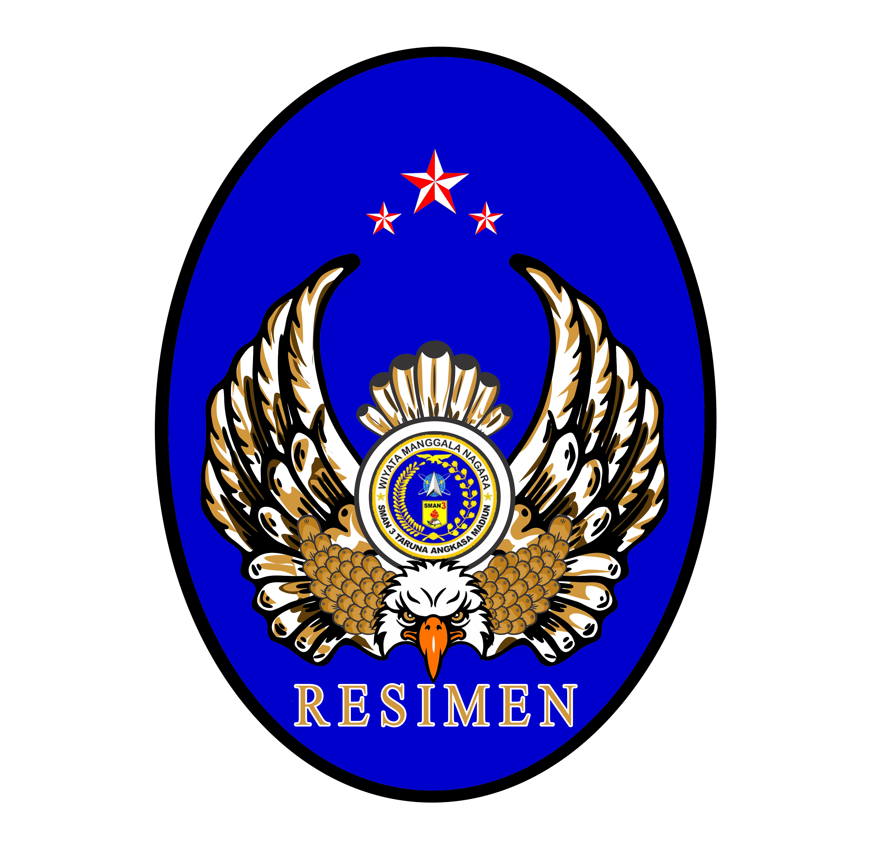

SMAN 3 Taruna Angkasa Madiun merupakan sekolah yang bekerjasama dengan TNI Angkatan Udara yang berbasis semi militer. Sekolah ini memiliki 3 pilar organisasi yaitu OSIS, MPK, dan, Resimen. Melalui organisasi inilah taruna-taruni berekspresi dan berlatih untuk mengembangkan potensi.
SMAGANASA
Organization
OSIS
OSIS (Organisasi Siswa Intra Sekolah) merupakan salah satu organisasi populer di SMAN 3 Taruna Angkasa. Kerjasama dan kekompakan menjadi kunci utama berjalannya OSIS SMAN 3 Taruna Angkasa. Dengan terstrukturnya program kerja dan dukungan positif dari seluruh warga sekolah, membuat OSIS SMAN 3 Taruna Angkasa dengan mudah membangun solidaritas yang dapat mewujudkan tercapainya visi dan misi.
MPK
MPK (Majelis Perwakilan Kelas) adalah suatu organisasi di sekolah yang bertugas mengawasi kinerja OSIS dalam menjalankan tugas-tugasnya selama masa jabatannya berlangsung. Jabatan MPK lebih tinggi daripada OSIS karena MPK itu one and only, satu-satunya organisasi di sekolah yang dapat mengawasi, memantau dan membantu kinerja OSIS dalam melaksanakan program-programnya, Menampung dan menyalurkan aspirasi siswa kepa pihak sekolah.
Resimen
Resimen adalah organisasi yang bertugas dalam mengatur seluruh jalannya kehidupan ketarunaan dan keperluan di ksatrian Taruna Angkasa. Segala keperluan dan jalannya kegiatan akan diatur oleh masing-masing sie. Ketertiban yang berjalan di SMAN 3 Taruna Angkasa Madiun akan diatur oleh pejabat batalyon dan POLTAR.